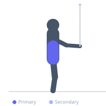
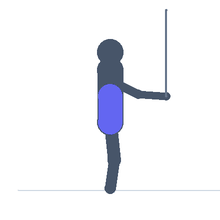

Exercise guide / Pallof Press
Pallof Press
The Pallof press is an anti-rotation core stability exercise that challenges the ability to resist rotational forces rather than produce them. Performed with a resistance band or cable anchored to the side, the exerciser extends the arms in front of the chest and holds against the pull — requiring the entire core to contract isometrically to prevent rotation. It is a cornerstone of lumbar rehabilitation, athletic performance, and functional core training.
Primary muscles
transverse abdominis
rectus abdominis
Secondary muscles
obliques
erector spinae
Stabilizers
gluteus medius
Equipment
Resistance Band (Loop / Mini Band)


Starting position
- Anchor a resistance band at chest height. Stand perpendicular to the anchor, far enough away to create tension. Hold the band with both hands at the chest.
Setup
- Anchor the band at a door frame or rack at chest height. Stand with feet shoulder-width apart, perpendicular to the anchor.
Steps
- Step 1: Hold the band with both hands pressed against the sternum. The band pulls horizontally toward the anchor point.
- Step 2: Brace the core firmly. The feet, hips, and shoulders should all face straight ahead (perpendicular to the anchor).
- Step 3: Slowly press the hands straight out in front of the chest, fully extending the arms.
- Step 4: Hold for 2–3 seconds at full extension, resisting the pull of the band.
- Step 5: Return the hands to the chest with control. Repeat for reps, then switch sides.
Coaching cues
- Squeeze your core like someone is about to punch you
- Your body should look the same at full extension as at the start — no rotation
- Press straight out from the sternum
Breathing
- Exhale and brace as the arms extend. Breathe steadily in the hold position.
Range of motion
- Full arm extension and return. The range of motion is straightforward — the challenge is in preventing rotation throughout.
Tempo
- 2-second press out, 2–3 second hold, 2-second return. 10–15 reps × 2–3 sets per side.
Common mistakes
- Rotating the torso toward the anchor — the goal is to prevent this rotation entirely
- Feet shifting or hips rotating — maintain a stable square stance
- Holding the breath excessively — learn to breathe while maintaining the brace
Safety
- Use very light resistance initially — the demand on the core is high relative to the apparent load
- Safe for most low back pain populations — often one of the earliest core exercises reintroduced in lumbar rehab
Training
- strength: 10–15 reps
- strength: 2–3 sets
- Rest: {'strength': 60}